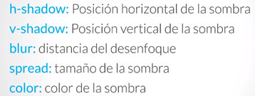
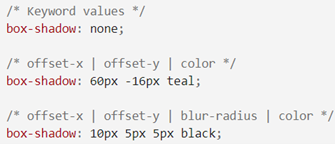

En la teoría del tema anterior habiamos visto como manipular los espacios entre y
dentro de los contenedores. Esto se lograba gracias a las propiedades de margin y
padding. Ahora, vamos a ver como aplicar estilos a los bordes de los contenedores. Esta
práctica nos va a resultar muy útil a la hora de manipular el espacio en el DOM, ya que,
gracias a los estilos que le daremos a los bordes de los contenedores, vamos a poder visualizar
el tamaño que ocupa el mismo dentro del sitio.
Adicionalmente, vamos a ver como aplicar estilos de sombreados a los contenedores para que
podamos embellecer los estilos que le damos a los mismos y nuestro sitio quede mucho más
agradable a la vista del usuario.
Border
Esta propiedad establece el estilo de línea para los cuatro lados del borde de un elemento.
Debemos saber que cuando estamos haciendo referencia a la porpiedad "border" estamos hablando de
una “propiedad abreviada”. Esto se debe a que border puede aplicar muchos estilos en una sola declaración. Pero, en este
caso puntual vamos a hacer referencia a “border-style” que es enmarcado que nosotros les damos a
los contenedores para visualizarlos.
Esta propiedad puede recibir hasta 4 valores comenzando siempre desde la parte top siguiendo el sentido
del reloj hacia la derecha, es decir: right, bottom y por último left. Esto debemos saberlo para manipular
los bordes cuando no es necesario que todos tengan el mismo valor.
Sintaxis
El siguiente ejemplo visualizaremos la sintaxis de border, recordemos que border es una propiedad
abreviada en la misma podemos darle diferentes tipos de argumentos como “tamaño” “tipo” y “color”.
Como podemos ver, puede recibir una de estas o como máximo las 3.
Primero hacemos el llamado del uso de la propiedad “border”. Luego es recomendable determinar
el “tamaño” del borde en "px" para visualizar el contenedor (el valor por defecto de este estilo
es “none”) recordemos que si no lo hacemos no podemos visualizar el contorno del contenedor.
Seguido, debemos especificar el tipo de “border” que vamos a utilizar para visualizar el contorno,
recordemos que para este estilo tenemos diferentes valores. Usualmente se suele trabajar para visualizar
el contorno es “solid”.
El ultimo valor que podemos utilizar en esta propiedad es “color”, que al aplicar este estilo es el
color que visualizaremos el contorno. Su valor por defecto es “black”, pero, si estamos trabajando
con varios contornos al mismo tiempo es recomendable usar otros colores para manipular mejor el
moldeado de las cajas.
Ejemplo de estilos en bordes
A continuación, podemos visualizar como quedaría el elemento con los estilos de los bordes
a su alrededor.
Elemento con bordes negros
Valores en los tipos de bordes
Anteriormente nombramos que los bordes podían tener diferentes estilos y estos podían ser
declarados y manipulados con la propiedad de "style". A continuación,
vamos a visualizar algunos de los estilos que podemos usar con esta propiedad:
None: es el valor que viene por defecto en el navegador en el cual no podemos visualizar los
bordes de los contenedores.
Dotted: este valor aplica al borde una línea punteada.
Inset: este valor crea un sombreado en la parte superior e izquierda del contenedor ancho.
Outset: crea un sombreado ancho en la parte derecha e inferior del contenedor.
Dashed: este valor crea un borde entre líneas.
Double: este valor crea una doble línea solida en el contorno del contenedor.
Solid: este valor crea una línea solida en el contorno del contenedor.
Grove: este valor crea un efecto como “inset” pero en todo el contorno del contenedor.
Grovegrove o doublegrove: crea un contorno solido ancho enmarcado en todo el contorno del contenedor.
Ridge: crea un contorno sombreado en todo el contenedor.
A tener en cuenta
Cuando se especifica un valor, se aplica el mismo estilo a los cuatro lados.
Cuando se especifican dos valores, el primer estilo se aplica a la parte superior e inferior,
el segundo a la izquierda y a la derecha.
Cuando se especifican tres valores, el primer estilo se aplica a la parte superior, el segundo a la
izquierda y derecha y el tercero a la parte inferior.
Cuando se especifican cuatro valores, los estilos se aplican a la parte superior, derecha, inferior e
izquierda en ese orden.
Efectos en Contenedores
Border Radius
Vamos a comenzar con el efecto de esquinas redondas para las cajas. Este efecto se logra con la
propiedad border-radius. A continuación, conoceremos un poco de su sintaxis:
border-radius: 5px; en Chrome
Como esta propiedad no es accesible a los diferentes navegadores, debemos agregar manuealmente
a nuestra hoja CSS las propiedades para los diferentes navegadores:
Además, la propiedad border-radius puede especificarse en cuatro formas:
Un valor: todas las esquinas tienen el mismo radio.
Dos valores: el primero se utiliza para el radio de las esquinas superior izquierda e
inferior derecha. El segundo valor se aplica al radio de las esquinas.
Tres valores: el primero se aplica al radio de la esquina superior izquierda, el segundo valor
a la esquina superior derecha y la esquina inferior izquierda, el tercero se aplica al radio inferior
de la esquina derecha.
Cuatro Valores: el primer valor se aplica al radio de la esquina superior izquierda, el segundo
al borde superior derecho, el tercero al borde inferior derecho y, el cuarto al borde inferior izquierdo.
Box Shadow
La propiedad CSS "box-shadow" añade efectos de sombra alrededor del marco de un elemento. Se pueden
definir múltiples efectos separados por comas. La caja de la sombra se describe por los desplazamientos
en X e Y, los radios de desenfoque y dispersión, y el color relativos al elemento.
La propiedad box-shadow permite proyectar una sombra difuminada desde el marco de casi cualquier elemento.
Si border-radius es especificado en un elemento con la propiedad box-shadow, la sombra adopta la misma
curva en las esquinas. El z-orden de múltiples cajas de sombra es la misma que de múltiples sombras de
texto (la primera sombra definida se ubica hasta arriba).

Sintaxis:

Dos, tres, o cuatro valores "lenght".
Si solo dos valores son definidos, son interpretados como valores offset-x y offset-y.
Si un tercer valor es dado, es interpretado como un blur-radius.
Si un cuarto valor es dado, es interpretado como un spread-radius.